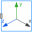
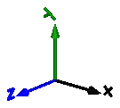
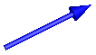
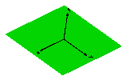
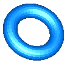
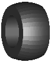
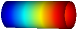

Visualizers3-dimensional visual objects used for animation |
Package Contents
|
Visualizing an elementary shape with dynamically varying shape attributes (has one frame connector) |
|
|
Visualizing an elementary shape with dynamically varying shape attributes (has two frame connectors) |
|
|  |
Visualizing a coordinate system including axes labels (visualization data may vary dynamically) |
|
Visualizing an arrow with dynamically varying size in frame_a |
|
|
Visualizing an arrow with dynamically varying size in frame_a based on input signal |
|
|
Visualizing the ground (box in z=0) |
|
|
Visualizing a torus |
|
|
Visualizing a voluminous wheel |
|
|
Visualizing a pipe with scalar field quantities along the pipe axis |
|
|
Visualizing a planar rectangular surface |
|
|
Library of functions operating on color |
|
|
Visualizers that require basic knowledge about Modelica in order to use them |
|
|
Visualizers that will be replaced by improved versions in the future (do not use them) |
Information
This information is part of the Modelica Standard Library maintained by the Modelica Association.
Package Visualizers contains components to visualize 3-dimensional shapes. These components are the basis for the animation features of the MultiBody library.
Content
| FixedShape FixedShape2 |
Visualizing an elementary shape with dynamically varying shape attributes.
FixedShape has one connector frame_a, whereas FixedShape2 has additionally
a frame_b for easier connection to further visual objects.
The following shape types are supported:
|
| FixedFrame | Visualizing a coordinate system including axes labels with fixed sizes:  |
| FixedArrow, SignalArrow |
Visualizing an arrow. Model "FixedArrow" provides
a fixed sized arrow, model "SignalArrow" provides
an arrow with dynamically varying length that is defined
by an input signal vector:  |
| Ground | Visualizing the ground by a plane:  |
| Torus | Visualizing a torus:  |
| VoluminousWheel | Visualizing a wheel:  |
| PipeWithScalarField | Visualizing a pipe with a scalar field represented by a color coding:  |
| Advanced | Package that contains components to visualize 3-dimensional shapes where all parts of the shape can vary dynamically. Basic knowledge of Modelica is needed in order to utilize the components of this package. |
The colors of the visualization components are declared with the predefined type MultiBody.Types.Color. This is a vector with 3 elements, {r, g, b}, and specifies the color of the shape. {r,g,b} are the "red", "green" and "blue" color parts. Note, r g, b are given as Integer[3] in the ranges 0 .. 255, respectively.